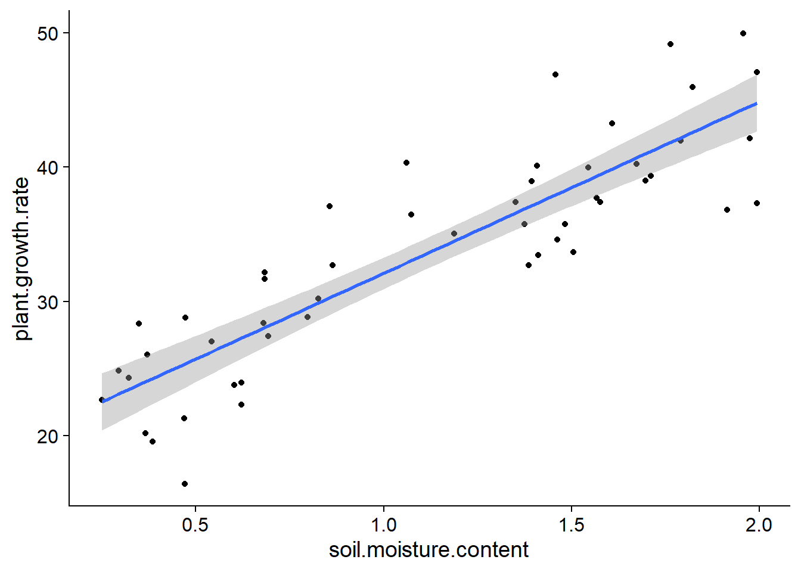
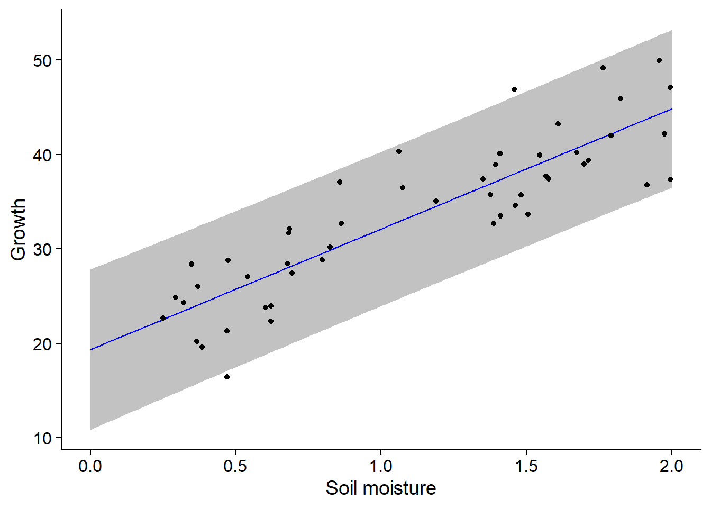
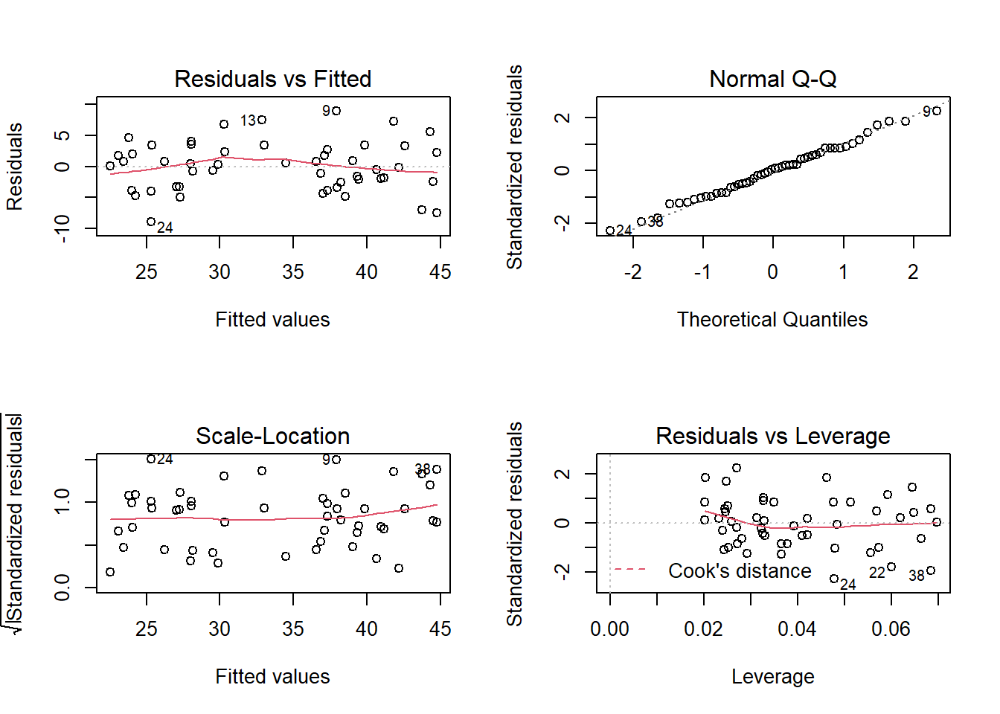

Simple linear regression
October 5, 2020
Objectives
Estimate and interpret the parameters of a simple linear regression.
Check the assumptions of a regression model from the diagnostic graphs.
Differentiate the confidence interval of a regression line and the prediction interval for new observations.
Use contrasts to represent a categorical predictor within a regression model.
Regression: Overview
The next six courses will focus on regression models. These models represent the mathematical relationship between a response variable and one or more variables named predictors.
Regression analysis is particularly useful in the following cases:
Analyzing the results of an experiment when one or more treatment variables are numeric (e.g. temperature, dose).
Separating the effect of discrete treatments (categorical variables) from that of other experimental conditions represented by numerical variables. In this context, it is often called analysis of covariance.
Determining the importance of associations between variables measured in nature (without assuming a causal link).
Using the associations between predictors and response to predict the value of the latter for new observations.
The mathematical model remains the same for all these situations, so they differ in the interpretation and use of the results.
Simple linear regression
The following equation describes a linear model for the relationship between a numerical predictor \(x\) and a numerical response \(y\). Since there is only one numerical predictor, it is a simple linear regression.
\[y = \beta_0 + \beta_1 x + \epsilon\]
\(\beta_0\) and \(\beta_1\) are the coefficients of the regression that will be estimated from the data, while \(\epsilon\) is the random residual that follows a normal distribution centered on zero: \(N(0,\sigma)\).
Equivalently, the model tells us that for a given value of \(x\), the response \(y\) follows a normal distribution with mean \(\mu = \beta_0 + \beta_1 x\) and standard deviation \(\sigma\):
\[y \sim N(\beta_0 + \beta_1 x, \sigma)\]
The intercept \(\beta_0\) is the mean value of \(y\) when \(x = 0\), while the slope \(\beta_1\) is the mean difference of \(y\) between two observations that differ by 1 unit of \(x\).
Method of least squares
The method of least squares serves to estimate the coefficients of a linear regression.
Example
The plant_growth_rate.csv dataset (from the textbook of Beckerman, Childs and Petchey, Getting Started with R, An Introduction for Biologists) contains data on the growth of a plant as a function of soil moisture content.
pgr <- read.csv("../donnees/plant_growth_rate.csv")
str(pgr)## 'data.frame': 50 obs. of 2 variables:
## $ soil.moisture.content: num 0.47 0.541 1.698 0.826 0.857 ...
## $ plant.growth.rate : num 21.3 27 39 30.2 37.1 ...Estimating the coefficients of the linear regression is equivalent to finding the line that is “closest” to the points in the graph of \(y\) vs. \(x\).
ggplot(pgr, aes(x = soil.moisture.content, y = plant.growth.rate)) +
geom_point() +
geom_smooth(method = "lm", se = FALSE)## `geom_smooth()` using formula 'y ~ x'
More precisely, it is possible to show that the best unbiased estimators of linear regression parameters are those that minimize the sum of the squared residuals.
For a series of \(n\) observations of \(x\) and \(y\), this sum of squared residuals corresponds to:
\[ \sum_{k = 1}^n \epsilon_k^2 = \sum_{k = 1}^n (y_k - (\beta_0 + \beta_1 x_k))^2 \]
The estimates \(\hat{\beta_0}\) and \(\hat{\beta_1}\) that minimize this sum are obtained by differential calculus. (They are the values for which the partial derivatives of the sum as a function of each coefficient are equal to zero.)
The estimator for the slope \(\beta_1\) is equal to the covariance of \(x\) and \(y\) divided by the variance of \(x\):
\[\hat{\beta_1} = \frac{\sum_{k = 1}^n (x_k - \bar{x})(y_k - \bar{y})}{\sum_{k = 1}^n (x_k - \bar{x})^2}\]
Here, \(\bar{x}\) and \(\bar{y}\) represent the means of \(x\) and \(y\), respectively, over all observations.
The estimator for the intercept \(\beta_0\) is equal to:
\[\hat{\beta_0} = \bar{y} - \hat{\beta_1} \bar{x}\]
By rearranging this last equation:
\[\bar{y} = \hat{\beta_0} + \hat{\beta_1} \bar{x}\]
we see that the estimated regression line goes through the point \((\bar{x}, \bar{y})\), the “center of mass” for the scatterplot of \(x\) and \(y\).
Interpreting the results
The lm function serves to estimate the parameters of a linear regression in R. As for aov, this function accepts a formula of the type response ~ predictor, as well as a data argument that specifies the data frame. By fitting a regression model to the data above, we obtain the following result:
mod <- lm(plant.growth.rate ~ soil.moisture.content, data = pgr)
summary(mod)##
## Call:
## lm(formula = plant.growth.rate ~ soil.moisture.content, data = pgr)
##
## Residuals:
## Min 1Q Median 3Q Max
## -8.9089 -3.0747 0.2261 2.6567 8.9406
##
## Coefficients:
## Estimate Std. Error t value Pr(>|t|)
## (Intercept) 19.348 1.283 15.08 <2e-16 ***
## soil.moisture.content 12.750 1.021 12.49 <2e-16 ***
## ---
## Signif. codes: 0 '***' 0.001 '**' 0.01 '*' 0.05 '.' 0.1 ' ' 1
##
## Residual standard error: 4.019 on 48 degrees of freedom
## Multiple R-squared: 0.7648, Adjusted R-squared: 0.7599
## F-statistic: 156.1 on 1 and 48 DF, p-value: < 2.2e-16The coefficient table includes the intercept and the effect of each predictor. If the assumptions of the model are respected (see section below), each estimated \(\hat{\beta}\) follows a normal distribution with a mean equal to the value of the parameter \(\beta\), and a standard error as shown in the table. This allows us to run a \(t\)-test for the null hypothesis \(\beta = 0\), with a value \(p\) indicated in the last column.
Under that table, Residual standard error is the standard deviation of model residuals calculated with 48 degrees of freedom (50 observations - 2 estimated parameters).
sqrt(sum(mod$residuals^2) / 48)## [1] 4.019094The second to last line presents the coefficient of determination \(R^2\), which is discussed in detail below.
The last line of the summary is an \(F\)-test similar to ANOVA. When we have only one predictor, this test gives the same information as the \(t\)-test for that predictor: the probability of obtaining an estimated effect that far from 0 if the actual effect of the predictor is 0.
The confidence intervals for each coefficient are not shown in the summary, but we can calculate them with the confint function.
confint(mod)## 2.5 % 97.5 %
## (Intercept) 16.76833 21.92859
## soil.moisture.content 10.69764 14.80144Coefficient of determination
The coefficient of determination represents the fraction of the total variance in \(y\) that is explained by the model.
\[R^2 = 1 - \frac{\sum_{k=1}^n (y_k - \hat{y_k})^2}{\sum_{k=1}^n (y_k - \bar{y})^2}\]
In the second term, \(\hat{y_k} = \hat{\beta_0} + \hat{\beta_1} x_k\) is the expected (mean) value of \(y_k\) according to the model. Therefore, the numerator is the sum of squared residuals, while the denominator represents the sum of squared differences between each observation of \(y\) and the mean of \(y\). The second term thus represents the fraction of the total variance of \(y\) that is not explained by the model; by subtracting it from 1, we obtain the fraction of the variance explained.
The values of \(\hat{y_k}\) for each point are recorded in the fitted.values component of the result of lm (e.g. mod$fitted.values), whereas the residuals are recorded in the residuals component.
We can verify that the \(R^2\) calculated manually matches the result reported above.
r2 <- 1 - sum(mod$residuals^2) / sum((pgr$plant.growth.rate - mean(pgr$plant.growth.rate))^2)
r2## [1] 0.764796For a simple linear regression, the square root of \(R^2\) is equal to the correlation between \(x\) and \(y\).
cor(pgr$soil.moisture.content, pgr$plant.growth.rate) ## [1] 0.8745262sqrt(r2)## [1] 0.8745262Note that there are two values of \(R^2\) in the summary of the linear model. The Multiple R-squared is the coefficient of determination \(R^2\) defined above. The Adjusted R-squared has a slightly different definition; it is based on the ratio between the residual variance and total variance, instead of the ratio of the sum of squares.
r2_adj <- 1 - (sum(mod$residuals^2)/48) / var(pgr$plant.growth.rate)
r2_adj## [1] 0.759896Since the residual variance is calculated with \(n - k\) degrees of freedom, where \(k\) is the number of estimated parameters, the adjusted \(R^2\) is smaller than the non-adjusted \(R^2\) and this difference becomes more important as the number of parameters in the model increases (see the multiple linear regression examples in the next class).
During the class on the hypothesis testing, it was recommended to present three types of results following a test:
- the probability that the measured effect is due to chance (\(p\)-value);
- the estimate and the confidence interval of the measured effect; and
- the magnitude of the effect compared to the variance of the individual data points.
The coefficient of determination \(R^2\) answers the third question: Which part of the observed variation is due to the effect of the treatments or predictors measured?
Finally, a reminder: when we speak of the effect of a predictor or the fraction of the variance explained, this does not always mean that there is a cause-and-effect relationship between the predictor and the response. Our ability to interpret a statistical association (or correlation) as a cause-and-effect relationship does not depend on the magnitude of the effect, but rather on the controls established in the experimental design: independent variation of factors, use of control group, random assignment of treatments, etc.
Confidence interval and prediction interval
To display the regression line on a scatter plot of \(x\) and \(y\), along with its confidence interval, we use the geom_smooth function of the ggplot2 package, with the lm (linear model) method.
ggplot(pgr, aes(x = soil.moisture.content, y = plant.growth.rate)) +
geom_point() +
geom_smooth(method = "lm")## `geom_smooth()` using formula 'y ~ x'
For each value of \(x\), the gray area gives a confidence interval for the average value of \(y\) according to the linear model. By default, this is a 95% interval, which can be changed with the level argument of geom_smooth.
Note that the confidence interval becomes wider at the ends of the graph. Remember that the regression line must pass through the point \((\bar{x}, \bar{y})\), so the uncertainty on the slope “rotates” the line slightly around this point, which generates greater uncertainty at the ends.
Suppose that in addition to estimating the average trend between \(x\) and \(y\), we want to predict the value of \(y\) for new observations, knowing only the value of \(x\). In the code below, we create a new pgr_nouv data array with 101 soil moisture values, and then we call the predict function to get growth predictions from the model, with a prediction interval. We then attach these columns to pgr_nouv with cbind.
pgr_nouv <- data.frame(soil.moisture.content = seq(0, 2, 0.02))
pgr_pred <- predict(mod, pgr_nouv, interval = "prediction")
pgr_nouv <- cbind(pgr_nouv, pgr_pred)
str(pgr_nouv)## 'data.frame': 101 obs. of 4 variables:
## $ soil.moisture.content: num 0 0.02 0.04 0.06 0.08 0.1 0.12 0.14 0.16 0.18 ...
## $ fit : num 19.3 19.6 19.9 20.1 20.4 ...
## $ lwr : num 10.9 11.1 11.4 11.7 11.9 ...
## $ upr : num 27.8 28.1 28.3 28.6 28.8 ...The fit column contains the predicted values (which correspond to the points on the regression line) while lwr and upr are the lower and upper limits of the 95% prediction interval.
Now let’s superimpose the regression line, the prediction interval (with geom_ribbon) and the scatter plot:
ggplot(pgr_nouv, aes(x = soil.moisture.content)) +
labs(x = "Soil moisture", y = "Growth") +
geom_ribbon(aes(ymin = lwr, ymax = upr), alpha = 0.3) +
geom_line(aes(y = fit), color = "blue") +
geom_point(data = pgr, aes(y = plant.growth.rate))
In contrast to the confidence interval, which represents the uncertainty in the mean value of the response for a certain predictor value, the prediction interval represents the uncertainty in the value of the response for an individual observation. Thus, it is expected that about 95% of the points are within the prediction interval, which is the case here (48/50).
Note: In general, it is not prudent to use the result of a regression to predict the response for predictor values outside the range of values with which the model was estimated (in this example, for soil moisture values > 2). These extrapolations are less reliable than predictions within the range of observed values (interpolation). In particular, an approximately linear relation on a restricted scale of values of \(x\) can become strongly non-linear at a different scale.
Assumptions of the linear regression model
As for ANOVA, the residuals are:
- independent and
- normally distributed
- with the same variance.
Moreover:
- the relationship between the average response and the predictors is linear, and
- the predictors are measured without error (or this error is negligible compared to the other errors of the model).
Linearity
The linearity requirement is less restrictive than it seems. Variable transformations make it possible to convert a non-linear relationship into a linear relationship. For example, if \(y\) is a function of a certain power of \(x\):
\[ y = a x^b \]
then by applying a logarithm to each side, we obtain a linear model:
\[ \log(y) = \log(a) + b \log(x) \]
In general, the equation linking \(x\) and \(y\) can contain nonlinear functions of \(x\), as long as it is a linear function of the coefficients. For example, the quadratric equation:
\[ y = \beta_0 + \beta_1 x + \beta_2 x^2 \] is an example of a linear model; it is a multiple linear regression, since there are two predictors, \(x\) and \(x^2\).
Independence of residuals
The independence of residuals means that the portion of the response \(y\) not explained by the predictors \(x\) is independent from one observation to another.
In ecology, the non-independence of residuals is often due to a proximity of certain observations in space and time. For example, if the observations are spread over several days, observations that are closer in time may be more similar. Factors that can cause this temporal dependence (e.g., weather) can be included in the model to obtain the most independent residuals possible.
The non-independence of residuals does not bias the estimates of the model coefficients, so these remain valid, but their uncertainty will be underestimated. (We could say that a sample of non-independent observations is equivalent to a smaller independent sample.) Thus, the confidence intervals and hypothesis tests on the significance of the coefficients will not be valid.
Normality
Just like the results from a \(t\) test or an ANOVA, the estimated values and confidence intervals for the linear regression coefficients are not too affected by a lack of normality of the residuals; due to the central limit theorem, the distribution of these estimates is closer to a normal distribution than the distribution of individual residuals.
Deparature from the normal distribution has a greater effect on the model’s predictions. Specifically, if the distribution of residuals has more extreme values than expected by a normal distribution, the width of the prediction intervals will underestimate the true uncertainty.
Diagnostic graphs
Here are the four diagnostic graphs obtained with the plot function applied to the result of lm.

The first two graphs correspond to those already seen in ANOVA. For the graph of residuals vs. fitted values, here are important points to check:
The residuals must be randomly dispersed around zero. The presence of a trend (linear or not) indicates systematic effects ignored by the model. In this case, we may have a slight non-linear (quadratic) trend in the residuals.
The variance of the residuals must be approximately constant (homoscedasticity). A common type of heteroscedasticity occurs when the variance increases with the mean. In this case, the graph of the residuals vs. fitted values produces a funnel shape (dispersion of points increases along the \(x\) axis).
The quantile-quantile plot makes it possible to detect systematic deviations from the normality of the residuals.
The third graph shows the scale of the residuals (in absolute value) according to the fitted values of \(y\). This graph will also show a trend if the variance is not constant.
Leverage
The last chart shows the leverage of observations relative to the value of the residuals. An observation with high leverage has a greater influence on the regression coefficient estimates; this occurs most often in the case of isolated observations and far from the mean values of the predictors. An observation far from the mean (significant positive or negative residual) that also has a strong leverage effect may move the regression line away from the general trend indicated by the other data.
Cook’s distance \(D\) is a metric that combines leverage with the magnitude of the residual. The dashed lines on the fourth graph identify problematic points that exceed a certain value of \(D\), usually \(D > 1\). In our previous example, no point has a large influence, so these dotted lines are outside the visible part of the graph.
Categorical predictor and contrasts
Relationship between linear regression and ANOVA
In this section, we will see how the one-way ANOVA model can be presented as a linear regression. We will use the InsectSprays dataset, which contains counts of insects in plots after applying different insecticide spray treatments. As we saw in the previous class, it is useful to apply a square root transformation to count data so that the variance of the response will be more similar between treatments.
ggplot(InsectSprays, aes(x = spray, y = sqrt(count))) +
geom_boxplot()
Here are the results of the ANOVA from the aov function, as seen in the previous class.
spray_aov <- aov(sqrt(count) ~ spray, InsectSprays)
summary(spray_aov)## Df Sum Sq Mean Sq F value Pr(>F)
## spray 5 88.44 17.688 44.8 <2e-16 ***
## Residuals 66 26.06 0.395
## ---
## Signif. codes: 0 '***' 0.001 '**' 0.01 '*' 0.05 '.' 0.1 ' ' 1Let’s now fit the same model with lm:
spray_lm <- lm(sqrt(count) ~ spray, InsectSprays)
summary(spray_lm)##
## Call:
## lm(formula = sqrt(count) ~ spray, data = InsectSprays)
##
## Residuals:
## Min 1Q Median 3Q Max
## -1.24486 -0.39970 -0.01902 0.42661 1.40089
##
## Coefficients:
## Estimate Std. Error t value Pr(>|t|)
## (Intercept) 3.7607 0.1814 20.733 < 2e-16 ***
## sprayB 0.1160 0.2565 0.452 0.653
## sprayC -2.5158 0.2565 -9.807 1.64e-14 ***
## sprayD -1.5963 0.2565 -6.223 3.80e-08 ***
## sprayE -1.9512 0.2565 -7.606 1.34e-10 ***
## sprayF 0.2579 0.2565 1.006 0.318
## ---
## Signif. codes: 0 '***' 0.001 '**' 0.01 '*' 0.05 '.' 0.1 ' ' 1
##
## Residual standard error: 0.6283 on 66 degrees of freedom
## Multiple R-squared: 0.7724, Adjusted R-squared: 0.7552
## F-statistic: 44.8 on 5 and 66 DF, p-value: < 2.2e-16Note that some elements are present in both summaries. The \(F\) statistic is the same, and if we take the square of the residual standard error, we retrieve the mean of the squared residuals (MSE) from the ANOVA.
0.6283^2## [1] 0.3947609The results for lm put more emphasis on estimating the effects of each treatment (Coefficients section). As we briefly discussed in the previous class, the intercept shows the mean response for the first treatment (A), whereas the coefficients sprayB to sprayF show the differences between the mean of treatment A and each of the other treatments. In the following section, we will explain why the results are presented in this way.
The table also shows a \(t\) test to determine if each difference is significant. Note that unlike Tukey’s range test seen in the previous class, the \(p\) values reported here are not adjusted for multiple comparisons. Also, rather than presenting all possible comparisons (all pairs of treatments), only comparisons of treatment A with each other treatment are shown.
We can retrieve the ANOVA table for a linear model output with the anova function.
anova(spray_lm)## Analysis of Variance Table
##
## Response: sqrt(count)
## Df Sum Sq Mean Sq F value Pr(>F)
## spray 5 88.438 17.6876 44.799 < 2.2e-16 ***
## Residuals 66 26.058 0.3948
## ---
## Signif. codes: 0 '***' 0.001 '**' 0.01 '*' 0.05 '.' 0.1 ' ' 1Encoding a categorical variable
Consider an experiment with a control group and two treatments (\(T_1\) and \(T_2\)). To represent these data in a regression model, we create two variables:
- \(T_1\) = 1 for the observations that received treatment 1, 0 for the others.
- \(T_2\) = 1 for the observations that received treatment 2, 0 for the others.
We obtain the model: \(y = \beta_0 + \beta_1 T_1 + \beta_2 T_2 + \epsilon\)
By substituting the values of \(T_1\) and \(T_2\), we can determine the mean of \(y\) for each group as a function of the \(\beta\) coefficients:
- Control group (\(T_1 = 0, T_2 = 0\)): \(\mu_{ctrl} = \beta_0\)
- Treatment 1 (\(T_1 = 1, T_2 = 0\)): \(\mu_{tr1} = \beta_0 + \beta_1\)
- Treatment 2 (\(T_1 = 0, T_2 = 1\)): \(\mu_{tr2} = \beta_0 + \beta_2\)
The intercept is the mean of the control group while the other two coefficients are the differences between the mean of each treatment and that of the control group. This type of coding of a categorical variable makes it easy to compare each treatment with a reference. This is the type of encoding used by default in R, as we have seen in the results above.
Contrastes
In statistics, a contrast is a numeric variable defined from a categorical variable (or factor) that represents a comparison between categories.
For a factor with \(k\) categories, we can define \(k - 1\) independent contrasts. In the previous example, the contrasts \(T_1\) and \(T_2\) were used to compare treatment 1 to the control group and treatment 2 to the control group. Knowing these two differences, we also know the difference between treatments 1 and 2, so it would be redundant to add a third contrast.
In R, the contrasts function shows the matrix of contrasts associated with a factor.
contrasts(InsectSprays$spray)## B C D E F
## A 0 0 0 0 0
## B 1 0 0 0 0
## C 0 1 0 0 0
## D 0 0 1 0 0
## E 0 0 0 1 0
## F 0 0 0 0 1The columns of this matrix correspond to contrasts (B to F), which take a value of 1 for one treatment and 0 for the others. The treatment A is associated with a value of 0 for each contrast.
In the InsectSprays data frame, spray is not of type character, but instead it is a factor. This is a data type used by R to represent a categorical variable with a limited number of possible values (called levels).
class(InsectSprays$spray)## [1] "factor"levels(InsectSprays$spray)## [1] "A" "B" "C" "D" "E" "F"Any character vector in R can be converted into a factor with the as.factor function. By default, R places the levels in alphabetical order:
levels(as.factor(c("banana", "apple", "orange")))## [1] "apple" "banana" "orange"For an existing factor, we can change the reference level (first level) with the relevel function, which also modifies the contrasts created from this factor.
InsectSprays$spray <- relevel(InsectSprays$spray, ref = "F")
levels(InsectSprays$spray)## [1] "F" "A" "B" "C" "D" "E"contrasts(InsectSprays$spray)## A B C D E
## F 0 0 0 0 0
## A 1 0 0 0 0
## B 0 1 0 0 0
## C 0 0 1 0 0
## D 0 0 0 1 0
## E 0 0 0 0 1By refitting the linear model with these new contrasts, we obtain coefficients that show the differences between treatment F and all others.
spray_lm <- lm(sqrt(count) ~ spray, InsectSprays)
summary(spray_lm)##
## Call:
## lm(formula = sqrt(count) ~ spray, data = InsectSprays)
##
## Residuals:
## Min 1Q Median 3Q Max
## -1.24486 -0.39970 -0.01902 0.42661 1.40089
##
## Coefficients:
## Estimate Std. Error t value Pr(>|t|)
## (Intercept) 4.0186 0.1814 22.155 < 2e-16 ***
## sprayA -0.2579 0.2565 -1.006 0.318
## sprayB -0.1420 0.2565 -0.554 0.582
## sprayC -2.7738 0.2565 -10.813 2.98e-16 ***
## sprayD -1.8543 0.2565 -7.229 6.35e-10 ***
## sprayE -2.2092 0.2565 -8.612 2.13e-12 ***
## ---
## Signif. codes: 0 '***' 0.001 '**' 0.01 '*' 0.05 '.' 0.1 ' ' 1
##
## Residual standard error: 0.6283 on 66 degrees of freedom
## Multiple R-squared: 0.7724, Adjusted R-squared: 0.7552
## F-statistic: 44.8 on 5 and 66 DF, p-value: < 2.2e-16Note that the change in contrasts affects only the coefficient estimates. The \(R^2\) and the \(F\)-test are the same.
Changing the type of contrasts
The type of contrast used by default in R compares each category to a reference category. It is often called a treatment coding (contr.treatment in R) because it is useful for comparing treatments to a control group. Since we do not have a reference group for the spray factor, we could use another type of contrast. Here are effect coding (contr.sum) contrasts for the same variable.
data(InsectSprays) # reload InsectSprays
contrasts(InsectSprays$spray) <- "contr.sum"
contrasts(InsectSprays$spray)## [,1] [,2] [,3] [,4] [,5]
## A 1 0 0 0 0
## B 0 1 0 0 0
## C 0 0 1 0 0
## D 0 0 0 1 0
## E 0 0 0 0 1
## F -1 -1 -1 -1 -1We first reloaded the data frame with data to discard the edits we did previously.
To facilitate the interpretation of the results, we assign a name to the contrast variables.
colnames(contrasts(InsectSprays$spray)) <- c("A", "B", "C", "D", "E")
contrasts(InsectSprays$spray)## A B C D E
## A 1 0 0 0 0
## B 0 1 0 0 0
## C 0 0 1 0 0
## D 0 0 0 1 0
## E 0 0 0 0 1
## F -1 -1 -1 -1 -1In this type of encoding, each contrast takes the value of 1 for one of the categories, except for the last category which takes a value of -1 for all the contrasts. An important property of these contrasts is that the sum of each column is zero, which means that the mean of each contrast across all categories is zero.
In the strict statistical sense, a contrast variable must have a sum of zero over all categories. The treatment coding used by default in R therefore does not form true contrasts.
Let’s consider the regression model: \(y = \beta_0 + \beta_1 T_1 + \beta_2 T_2\) with the effect coding defined above.
- Category 1 (\(T_1 = 1, T_2 = 0\)): \(\mu_1 = \beta_0 + \beta_1\)
- Category 2 (\(T_1 = 0, T_2 = 1\)): \(\mu_2 = \beta_0 + \beta_2\)
- Category 3 (\(T_1 = -1, T_2 = -1\)): \(\mu_3 = \beta_0 - \beta_1 - \beta_2\)
- Grand mean: \(\mu = (\mu_1 + \mu_2 + \mu_3)/3 = \beta_0\)
The intercept thus corresponds to the grand mean while the coefficients are the difference between the mean of each category and the grand mean. The effect of the last category can be determined by taking the opposite of the sum of the other effects, so \(-(\beta_1 + \beta_2)\) here.
Here is the result of the linear regression with these new contrasts.
spray_lm <- lm(sqrt(count) ~ spray, InsectSprays)
summary(spray_lm)##
## Call:
## lm(formula = sqrt(count) ~ spray, data = InsectSprays)
##
## Residuals:
## Min 1Q Median 3Q Max
## -1.24486 -0.39970 -0.01902 0.42661 1.40089
##
## Coefficients:
## Estimate Std. Error t value Pr(>|t|)
## (Intercept) 2.81243 0.07405 37.980 < 2e-16 ***
## sprayA 0.94825 0.16558 5.727 2.73e-07 ***
## sprayB 1.06420 0.16558 6.427 1.67e-08 ***
## sprayC -1.56758 0.16558 -9.467 6.49e-14 ***
## sprayD -0.64808 0.16558 -3.914 0.000218 ***
## sprayE -1.00297 0.16558 -6.057 7.37e-08 ***
## ---
## Signif. codes: 0 '***' 0.001 '**' 0.01 '*' 0.05 '.' 0.1 ' ' 1
##
## Residual standard error: 0.6283 on 66 degrees of freedom
## Multiple R-squared: 0.7724, Adjusted R-squared: 0.7552
## F-statistic: 44.8 on 5 and 66 DF, p-value: < 2.2e-16Question: What is the meaning of the coefficients in this table? What is the difference between the mean response for treatment F and the overall mean?
Summary
The
lmfunction fits a linear regression model in R.In a simple linear regression, \(y = \beta_0 + \beta_1 x + \epsilon\), \(\beta_0\) (the intercept) is the mean of \(y\) when \(x = 0\) and \(\beta_1\) is the mean difference in \(y\) associated with a unit difference in \(x\).
The confidence interval of a regression line represents the uncertainty on the average value of \(y\) for given values of the predictors. The prediction interval represents the uncertainty about the value of a future observation of \(y\), knowing the value of the predictors.
The ANOVA model is an example of linear regression. Categorical variables are represented in a regression model using contrasts.
We have seen two possible types of contrasts in R: the treatment coding (default option) compares the effect of each category to a reference category, while the effect coding compares the effect of each category to the mean of all categories.